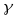

Le geometrie non euclidee
Il V postulato di Euclide
Il concetto di rette parallele compare di frequente in questioni di agrimensura(si pensi ai solchi o ai confini di un campo rettangolare) e quindi, con ogni probabilità, risale agli inizi stessi della geometria.
E' dunque naturale che problemi concernenti le rette parallele siano stati affrontati fin dagli albori dello studio della geometria. È certo che se ne occuparono, fra gli altri, Talete, Pitagora, Aristotele; si ignora, però, in quale modo essi impostarono l'argomento.
Spetta senz'altro ad Euclide il merito di aver compreso, per primo, la necessità di introdurre un postulato a sostegno di tutti i successivi ragionamenti sulle rette parallele. Tale postulato (il V nella trattazione di Euclide della geometria piana) dice: due rette, tagliate da una terza, si incontrano da quella parte ove la somma degli angoli coniugati interni è minore di due angoli retti.
Proclo (V secolo d.C), introdusse un postulato sulle parallele diverso nella forma ma non nella sostanza delle conseguenze che ne derivano: Dati nel piano una retta r ed un punto P esterno ad essa, esiste una ed una sola retta s passante per P e senza punti in comune con r.
Secondo il pensiero della matematica greca, i postulati sono proprietà che non si possono dimostrare, ma che però possono essere verificate sperimentalmente. Si osservi, ora, che solo il postulato di Euclide sfugge a questa possibilità di verifica sperimentale perché, per poterla effettuare, dovremmo disporre per il disegno di una regione illimitata.
Agli antichi matematici ciò parve una deficienza del perfetto meccanismo della geometria. Si cercò, pertanto, per molti secoli, di eliminare questo presunto difetto della costruzione euclidea tentando di dimostrare il postulato delle parallele che D'Alembert defini la croce e lo scandalo della geometria elementare.
Tra i molti tentativi di dimostrazione del postulato di Euclide va ricordato quello dovuto a Gerolamo Saccheri (1667-1733) che credette di essere riuscito nell'intento mediante un ingegnoso ragionamento per assurdo. Le argomentazioni del Saccheri e quelle analoghe di altri matematici contengono errori non facilmente rilevabili ad un primo studio. Tali errori vennero messi in evidenza dalla critica successiva, dopo analisi particolarmente approfondite.
Per quanto vani nel loro ultimo scopo, questi tentativi di dimostrazione del postulato di Euclide risultarono utili, sia perché permisero di trovare importanti relazioni fra i vari enti geometrici, sia perché le premesse (considerate ovvie) alle vane dimostrazioni fornirono altrettanti enunciati equivalenti a quello dato da Euclide.
Tra gli altri citiamo i seguenti: l'insieme dei punti di un piano equidistanti da una retta e situati da una stessa parte di questa, è una retta, una perpendicolare e un'obliqua ad una medesima retta si incontrano. Solo verso la fine del 1800 si mostrò che il postulato di Euclide è indipendente dagli altri, cioè non è dimostrabile a partire da questi. A Proposito di Euclide aggiungiamo un'ultima considerazione. Euclide non aveva nè la formazione critica, ne le cognizioni di logica matematica necessarie per provare la "indimostrabilità" del suo V postulato. Per cui, dopo aver probabilmente tentato di dimostrarlo - non gli rimanevano che due alternative: o quella d rifugiarsi (come avrebbero fatto tanti suoi successori) nella riduzione ad una delle altre proprietà geometriche apparentemente evidenti, o l'altra, per lui ben poco suggestiva, di darsi per vinto trasformando in un postulato quell'inafferrabile teorema. Euclide scelse la seconda strada, anche se ciò dovette provocargli non poca amarezza della quale troviamo una riprova nel fatto che, nel I libro degli Elementi, rimandò il più possibile l'applicazione del V postulato. Ma proprio questa sofferta rinuncia, sottolineando la sua onestà scientifica, costituisce un ulteriore motivo di apprezzamento della figura di Euclide.
La nascita delle geometrie non euclidee.
Abbiamo detto che, nel corso dei secoli, vari studiosi avevano inutilmente tentato di dimostrare il V postulato di Euclide. Nella maggioranza dei casi, veniva seguito un ragionamento per assurdo: si partiva cioè dall'ipotesi che il postulato fosse falso e si cercava di dedurne una contraddizione.
Visto che negando il postulato delle parallele non si riusciva ad ottenere la contraddizione cercata, era logico che, prima o dopo, qualche matematico si proponesse di studiare a fondo, in modo sistematico, le conseguenze derivanti dalla negazione dell'assioma stesso.
Non è chiaro chi per primo abbia avuto questa idea. Le prime pubblicazioni in proposito (verso il 1830) sono dovute all'ungherese Janos Bolyai (1802-1860) e, circa negli stessi anni ma del tutto indipendentemente, al russo Nikolaj Lobacevski (1793-1856). Janos Bolyai, che aveva meno di trent'anni, era figlio di un matematico e si era dedicato al problema delle parallele nonostante l'esplicito scoraggiamento da parte del padre.
Il giovane Bolyai, resosi conto dell'importanza dei suoi risultati, scrisse al padre:
Ho fatto scoperte così meravigliose che ne sono stato quasi sommerso. [...] Io ho creato un nuovo universo dal nulla. Successivamente, il padre di Bolyai mostrò il lavoro del figlio a Karl Friedrich Gauss (1777-1855), che era uno dei matematici più autorevoli dell'epoca. La risposta fu piuttosto secca, se non arrogante: Gauss affermò di aver già raggiunto gli stessi risultati, per cui lodare questo lavoro sarebbe come lodare me stesso, ed aggiunse di esser contento che qualcun altro avesse pubblicato quelle cose perché gli veniva risparmiata la fatica di scriverle. Il mancato incoraggiamento da parte di Gauss e, più ancora, la rivendicazione di una sua priorità scientifica, scoraggiarono a tal punto il giovane Bolyai da indurlo ad abbandonare quasi completamente gli studi relativi alle nuove geometrie.
In effetti, Gauss si era occupato dell'argomento prima di ricevere gli scritti di Bolyai, ma, come lui stesso aveva confidato in una lettera a un amico, ci vorrà molto tempo avanti che io renda pubbliche le mie ricerche in proposito. [...] Temo le grida dei Beoti. I timori di Gauss erano legati al convincimento che un'impostazione troppo originale di una questione classica finisse per suscitare più dissensi che consensi. E, in effetti, almeno in matematica, una certa cautela nei riguardi di nuove teorie è normalmente motivata perché, nella maggioranza dei casi, le teorie radicalmente innovatrici si rivelano presto ... sbagliate. In quel caso, i clamori paventati da Gauss non si verificarono. La diffusione delle nuove geometrie, pur suscitando perplessità e riserve, passò quasi inosservata per alcuni decenni.
Dati una retta r ed un punto , possiamo formulare tre ipotesi in relazione all'esistenza e all'unicità di rette passanti per P e parallele ad r:
- non esistono rette per P parallele ad r (partendo da questa premessa si ottiene la geometria ellittica, o di Riemann);
- esiste una ed una sola retta per P parallela ad r (è questo il noto postulato sul quale si sviluppa la geometria euclidea);
- esistono infinite rette per P che non hanno punti in comune con r (accettando questo assioma si ottiene la geometria iperbolica, o di Lobacevski).
Come è intuitivo, si dimostra che la situazione non dipende dalla particolare scelta del punto P e della retta r; in altre parole, se si ammette che valga una delle tre ipotesi anche in un solo caso, allora la stessa ipotesi si presenta qualunque siano P ed r.
La geometria iperbolica.
Considerando la figura, nell'insieme delle rette passanti per P, esistono, in forza del nuovo postulato, infinite rette che non intersecano la r; d'altra parte, basta congiungere P con i vari punti di r per ottenere anche infinite rette dello stesso fascio che intersecano la r. Se ne deduce che, nel fascio di centro P, esistono due rette, che indicheremo con TPR e T'PR', le quali separano le rette secanti rispetto ad r da quelle non secanti.
Queste ultime, cioè le rette interne agli angoli TPR' e T'PR, vengono dette ultraparallele alla retta r.
Le geometrie non euclidee
Resta da stabilire se le due rette separatrici TPR e T'PR' sono secanti o non secanti. Se una di esse, ad esempio la TPR, avesse in comune con r un punto H, allora un punto K che seguisse H nel senso indicato in fìgura individuerebbe una retta PK che sarebbe secante rispetto ad r pur giacendo nella zona delle ultraparallele. Essendo ciò assurdo, concludiamo che le rette separatrici sono non secanti. La qualifica di parallele (per P alla retta r) viene riservata alle semirette PT, PT'. Più precisamente esse vengono dette parallele limite alla retta r. Le semirette parallele Iimite rivestono una notevole importanza in geometria iperbolica e, in un certo senso, svolgono un ruolo analogo a quello delle rette parallele nella geometria euclidea. Ad esempio, la relazione di ultraparallelismo fra rette non è transitiva (in figura la retta KPT è ultraparallela ad r ed r è ultraparallela a PT ma PT e PT' sono due rette incidenti); invece, si dimostra che la relazione di parallelismo limite, nell'insieme delle semirette, gode della proprietà transitiva (oltre che della proprietà simmetrica).
Consideriamo, ora, il segmento PA, perpendicolare ad r, e indichiamo con a la sua lunghezza. La semiretta PA forma con le due semirette parallele limite per P ad r due angoli uguali APT, APT' che vengono indicati con il simbolo (a). Un risultato notevole, raggiunto da Bolyai e Lobacevski, fornisce l'ampiezza dell'angolo (a):
dove e = 2,71... è la base dei logaritmi neperiani.
Si noti che se a è molto "piccolo", allora e-a è circa uguale ad e0 = 1. Ne segue che (a)/2 è circa 45°; cioè che (a) è quasi un angolo retto. In altre parole, se ci limitiamo a zone piccole del piano, gli angoli in cui giacciono le ultraparallele sono molto piccoli e la situazione è, in definitiva, non troppo diversa da quella euclidea. Se, invece, a è molto "grande", allora e-a è di poco superiore a 0. Ne segue che (a)/2 e (a) diventano angoli molto "piccoli"; il che vuoi dire che, al crescere di a, gli angoli in cui giacciono le ultraparallele finiscono per diventare molto più grandi degli angoli in cui giacciono le rette secanti r.
C'è un modo convincente per disegnare le figure in geometria iperbolica? O, meglio, è possibile costruire rappresentazioni che chiariscano le proprietà della geometria iperbolica nello stesso modo in cui le usuali figure ci illustrano le proprietà della geometria euclidea?
Una risposta positiva alle domande precedenti fu data nella seconda metà del 1800 da Klein, Beltrami, Poincaré, che costruirono modelli per le nuove geometrie. Si può iniziare la trattazione dal cosiddetto "cerchio del Klein".
Sia C un cerchio privato della sua circonferenza contorno . Conveniamo di chiamare punti solo quelli di C (che diviene il nostro piano) e rette le corde di y private dei loro estremi. I punti e le rette così definiti soddisfano ai primi postulati della geometria euclidea:
per due punti distinti A, B, passa una ed una sola retta;
ogni retta è un insieme di punti ordinato e denso, privo di primo e di ultimo elemento;
 dato un punto, esistono rette cui esso non appartiene;
dato un punto, esistono rette cui esso non appartiene;
ogni retta divide il piano C in tre sottoinsiemi disgiunti ecc. (postulato dei semipiani opposti).
Non vale, invece, il postulato delle parallele. Infatti, comunque si scelgano una retta r ed un punto P esterno ad essa, esistono infinite rette che passano per P e non intersecano r: ad esempio, la retta PQ è ultraparallela ad r. Si osservi che, rispetto ad r, le semirette parallele limite sono le semirette PT e PT' (tenendo conto che i punti T e T' non fanno parte del piano C, per cui, a rigore, non avremmo dovuto rappresentarli nel disegno).
Vi sono regole che consentono di calcolare, in questo modello della geometria iperbolica, le lunghezze dei segmenti e le ampiezze degli angoli. Non le riportiamo data la loro complessità. Tuttavia, la situazione può essere in qualche modo chiarita osservando il quadro del pittore M.C. Escher; che, in questa ed in altre sue opere, ha tratto ispirazione dal cerchio del Klein. Si noti come ogni particolare viene ripetuto "infinite" volte diventando sempre più piccolo man mano che ci si avvicina al bordo (circonferenza y). Tali particolari ripetuti sarebbero simili fra loro nella geometria euclidea, mentre invece sono uguali in geometria iperbolica.
La geometria ellittica.
Lo studio della geometria ellittica, fino al suo completo sviluppo, è dovuto a Georg Riemann (1826-1866) e risale alla metà del 1800. La situazione è più complessa della precedente perché la non esistenza di rette parallele distinte comporta la necessità di modificare altri postulati oltre a quello delle parallele. Per rendercene conto consideriamo un segmento AB e tracciamo per i suoi estremi le perpendicolari r, s. Poiché la figura ottenuta è simmetrica rispetto alla retta AB, due sono le situazioni possibili: le rette r, s non hanno punti in comune; 2) r ed s si incontrano "da una parte" nel punto P; il che comporta, per la citata simmetria, che esse debbano incontrarsi anche "dall'altra parte" in un punto Q.
Ebbene: mentre in geometria euclidea si ha la prima alternativa, in geometria ellittica si verifica la seconda. Ma, allora, occorre rinunciare all'assioma dei semipiani ed affermare addirittura che ... P e Q sono lo stesso punto. Seguendo questa via, due rette distinte vengono ad avere sempre uno ed un sol punto in comune.
Un modello del piano ellittico si ottiene pensando che questo coincida con una superficie sferica S: i punti del piano ellittico sono le coppie di punti diametralmente opposti di S (si faccia attenzione: ogni coppia {A; A'} va pensata come un unico punto), mentre le rette sono le circonferenze massime di S.
In tale modello è rispettata la proprietà secondo, la quale per due "punti" distinti 51 passa una ed una sola "retta". Infatti, se {A; A'} e {B; B'} sono i due punti considerati, sappiamo (dalla geometria euclidea dello spazio) che la circonferenza massima C passante per A, A' e B (cioè di diametro AA' e che contiene B) passa anche per B': la C (in geometria ellittica) è quella cercata.
Inoltre, poiché (in geometria euclidea dello spazio) due circonferenze massime hanno sempre due punti in comune, diametralmente opposti, si conclude che, nel piano ellittico, due rette distinte si intersecano sempre in uno ed un so\o punto.
L osservazione del modello suggerisce che ogni retta della geometria ellittica va pensata come una linea chiusa, nel senso che chi la percorra torna, prima o poi, al punto di partenza. Ciò implica che una retta ha lunghezza finita.
Come angolo, nel piano ellittico, di due rette r, s che si incontrano nel punto
{P; P'} si assume l'angolo formato (in termini euclidei) dalle due tangenti alle corrispondenti circonferenze massime di S in P o in P' .
Aspetti teorici e pratici delle geometrie non euclidee.
Enunciamo, ora, alcune proprietà che vengono dimostrate nelle geometrie non euclidee.
- La somma degli angoli interni di un triangolo non è costante: in geometria iperbolica è sempre minore di un angolo piatto, in geometria ellittica è sempre maggiore.
- Se r ed s sono le perpendicolari ad un segmento AB, rispettivamente nei punti A e B, la distanza da r dei punti s diminuisce man mano che ci si allontana da B nella geometria ellittica; aumenta in quella iperbolica. Da questa proprietà traggono origine i due aggettivi ellittica ed iperbolica, che derivano da due verbi greci che significano, appunto, diminuire ed aumentare.
- In entrambe le geometrie non euclidee due triangoli con gli angoli rispettivamente uguali sono uguali. Per cui, non si può sviluppare l'usuale teoria della similitudine
- II rapporto fra una circonferenza rettificata e il suo diametro non è costante, ma varia al variare del raggio della circonferenza (da intendersi ancora come il luogo dei punti aventi distanza assegnata da un punto dato).
- In geometria ellittica, due rette qualunque r ed s ammettono una (ed una sola) perpendicolare comune (infatti, se nel modello visto pensiamo come poli la coppia di punti in cui le due "rette" r ed s si incontrano, allora il relativo equatore è perpendicolare ad entrambe). Invece, in geometria iperbolica, due rette hanno una perpendicolare comune se e solo se l'una è ultra-parallela all'altra,
- Dalla prima proprietà si deduce che non esistono quadrilateri con tutti gli angoli retti. In geometria ellittica esistono però triangoli trirettangoli, cioè con tutti e tre gli angoli retti.
- Non valgono il teorema di Pitagora e i due teoremi di Euclide.
Vediamo brevemente un'altra geometria non euclidea, di grande importanza pratica: la geometria sfèrica.
Un modello di tale geometria è costituito dalla superfìcie di una sfera: i punti sono i punti della sfera e le rette sono, come in geometria ellittica, le circonferenze massime.
La geometria sferica fu sviluppata ben prima delle geometrie iperbolica ed ellittica, per le sue applicazioni soprattutto nella navigazione; in effetti, come si può dimostrare, un segmento AB della geometria sferica individua il percorso più breve per andare dal punto A al punto B su una superficie sferica (si tratta, appunto, di seguire la circonferenza massima passante per A e per B, questo è il motivo per cui, oggi, gli aerei in viaggio dall'Italia verso città degli Stati Uniti grosso modo alla stessa latitudine, come New York, seguono le rotte artiche invece di volare lungo un parallelo).
La geometria sferica presenta strette analogie con la geometria ellittica. Fra l'altro:
- non esistono rette distinte prive di punti in comune;
- ogni retta ha lunghezza finita (la lunghezza di una circonferenza massima);
- la somma degli angoli interni di un triangolo è maggiore di un angolo piatto e, in particolare, esistono triangoli con tre angoli retti (sulla superficie della Terra, si pensi al triangolo formato dall'equatore e da due meridiani perpendicolari fra loro).
A differenza di quanto avviene in geometria ellittica, tuttavia, non è soddisfatto il postulato secondo cui per due punti distinti passa una ed una sola retta. In termini geografici, infatti, si pensi ai due poli e agli infiniti meridiani che passano per essi.
Proprio per questo motivo, in geometria ellittica vengono identificate le coppie di punti diametralmente opposti.
Verso la fine del 1800 studi dovuti a Felix Klein (1849-1925) e ad Henry Poincaré (1854-1912) hanno definitivamente confermato la assoluta coerenza logica delle nuove geometrie. È stato dimostrato, in particolare, che, ove una contraddizione fosse individuabile in una delle tre geometrie, sarebbe allora possibile ricavare, con un opportuno ragionamento, una contraddizione anche nelle altre due.
Le considerazioni precedenti fanno nascere spontanea una domanda: se da un punto di vista logico la geometria euclidea e quelle non euclidee hanno lo stesso valore, quale di esse l'esperienza ci fa prescegliere? In altre parole, se le varie geometrie non si contraddicono a vicenda, perché studiano enti diversi, quale di esse meglio si adatta a descrivere le proprietà dello spazio in cui viviamo?
La risposta a questa domanda è estremamente complessa. Prima di tutto si osservi che, per stabilire se la retta dello spazio fisico ha le caratteristiche della retta di Euclide o di quelle di Riemann o di Lobacevski, è necessario precisare che cosa si intende per retta reale. La scelta più ragionevole, preferibile sia per motivi di carattere teorico, sia per la possibilità di verifiche sperimentali, consiste nell'assumere come rette raggi luminosi. Ciò premesso, Gauss e Lobacevski pensarono alla possibilità di costruire un triangolo di dimensioni enormi e di misurarne, poi, la somma degli angoli interni (che, come abbiamo notato, è diversa nelle tre geometrie). Purtroppo, l'inevita-bile imperfezione degli strumenti che abbiamo a disposizione e la limitatezza dello spazio entro il quale tali esperienze possono venire effettuate non hanno consentito di giungere ad una conclusione chiarificatrice.
Si può, tuttavia, affermare che la geometria euclidea, è la più indicata per le applicazioni pratiche, sia per la sua maggiore semplicità, sia perché lo studio della fìsica ci assicura che non vi sono discordanze apprezzabili fra i dati rilevabili con gli strumenti a nostra disposizione ed i risultati cui si perviene applicando le leggi della geometria di Euclide. Il che significa che, anche se lo spazio non fosse euclideo, tuttavia la geometria di Euclide ce lo descriverebbe con ottima approssimazione.
Facciamo presente, infine, che gli studiosi di relatività (la teoria dovuta ad Einstein) ritengono che, allorché entrano in gioco certe distanze di ordine astronomico, sia più conveniente adoperare la geometria di Riemann.